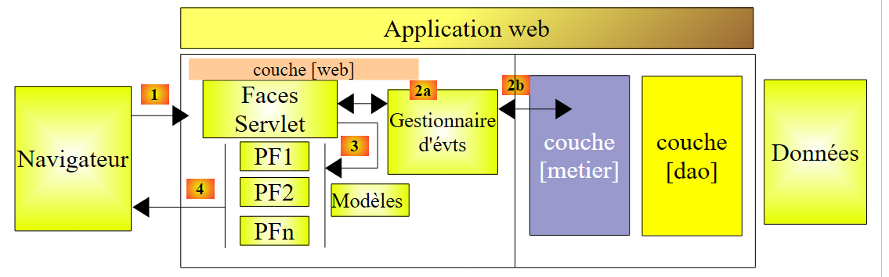
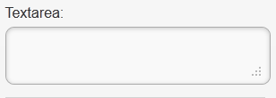
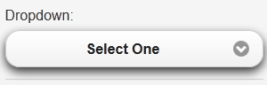
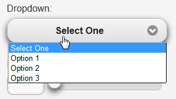
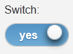
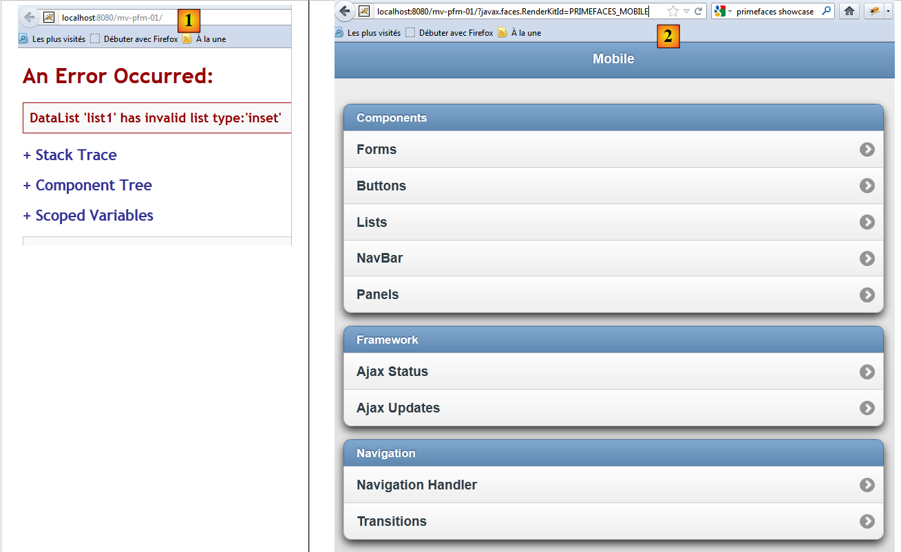
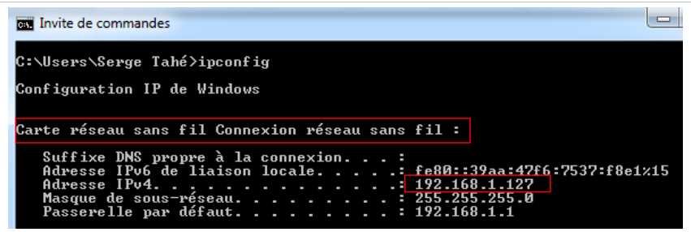
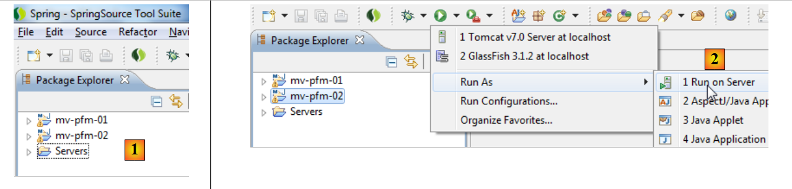
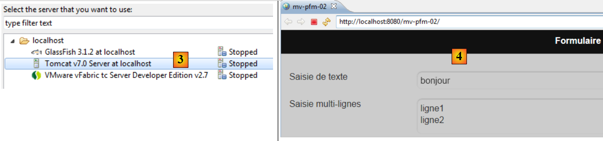

8. PrimeFaces Mobile 简介
8.1. PrimeFaces Mobile在JSF应用程序中的作用
让我们回到本文开头所探讨的 PrimeFaces 应用程序架构：
 |
当目标是手机浏览器时，我们需要调整布局。确实，必须考虑到智能手机屏幕的尺寸，并重新设计页面的易用性。有一些专门用于构建移动设备网页的库。PrimeFaces Mobile 库就是其中之一，它本身依赖于 jQuery Mobile 库。
移动 Web 应用程序的架构将与前文所述完全一致，唯一的区别在于：除了 JSF 和 PrimeFaces 之外，我们还将使用 PrimeFaces Mobile（PFM）库。
 |
我们将重新回顾JSF和PrimeFaces涉及的所有概念。只有[展示]层（主要是页面）会发生变化。
8.2. PrimeFaces Mobile 的优势
PrimeFaces Mobile 网站
[http://www.primefaces.org/showcase-labs/mobile/showcase.jsf?javax.faces.RenderKitId=PRIMEFACES_MOBILE]
提供了一份可在 PFM 页面中使用的组件列表 [1, 2]：
 |
您可以使用智能手机模拟器查看上述演示应用程序。其中一个适用于 iPhone 4 的模拟器可通过 URL [http://iphone4simulator.com/] [3] 访问。在 [4] 中输入待测试应用程序的地址，它将以 iPhone 的屏幕尺寸显示。此类模拟器在开发阶段非常有用，但最终必须在各种移动设备上进行实际环境测试。
8.3. 学习 PrimeFaces Mobile
PrimeFaces Mobile 提供的组件远少于 PrimeFaces。PrimeFaces Mobile 网站
[http://www.primefaces.org/showcase-labs/mobile/showcase.jsf?javax.faces.RenderKitId=PRIMEFACES_MOBILE]
提供了组件列表。例如，以下是在表单中可用的组件 [1]、[2]、[3]：
 |
您可以下载示例的源代码 [4]。我们发现，显示上述组件 [1]、[2]、[3] 的 PFM 页面如下所示：
<?xml version="1.0" encoding="windows-1250"?>
<f:view xmlns="http://www.w3.org/1999/xhtml"
xmlns:f="http://java.sun.com/jsf/core"
xmlns:h="http://java.sun.com/jsf/html"
xmlns:ui="http://java.sun.com/jsf/facelets"
xmlns:p="http://primefaces.org/ui"
xmlns:pm="http://primefaces.org/mobile"
contentType="text/html">
<pm:page title="Components">
<!-- Forms -->
<pm:view id="forms">
<pm:header title="Forms">
<f:facet name="left"><p:button value="Back" icon="back" href="#main?reverse=true"/></f:facet>
</pm:header>
<pm:content>
<p:inputText label="Input:" />
<p:inputText label="Search:" type="search"/>
<p:inputText label="Phone:" type="tel"/>
<p:inputTextarea id="inputTextarea" label="Textarea:"/>
<pm:field>
<h:outputLabel for="selectOneMenu" value="Dropdown: "/>
<h:selectOneMenu id="selectOneMenu">
<f:selectItem itemLabel="Select One" itemValue="" />
<f:selectItem itemLabel="Option 1" itemValue="Option 1" />
<f:selectItem itemLabel="Option 2" itemValue="Option 2" />
<f:selectItem itemLabel="Option 3" itemValue="Option 3" />
</h:selectOneMenu>
</pm:field>
<pm:inputRange id="range" minValue="0" maxValue="100" label="Range:" />
<pm:switch id="switch" onLabel="yes" offLabel="no" label="Switch:" />
<p:selectBooleanCheckbox id="booleanCheckbox" value="false" itemLabel="I agree" label="Checkbox"/>
<p:selectManyCheckbox id="checkbox" label="Checkboxes: ">
<f:selectItem itemLabel="Option 1" itemValue="Option 1" />
<f:selectItem itemLabel="Option 2" itemValue="Option 2" />
<f:selectItem itemLabel="Option 3" itemValue="Option 3" />
</p:selectManyCheckbox>
<p:selectOneRadio id="radio" label="Radios: ">
<f:selectItem itemLabel="Option 1" itemValue="Option 1" />
<f:selectItem itemLabel="Option 2" itemValue="Option 2" />
<f:selectItem itemLabel="Option 3" itemValue="Option 3" />
</p:selectOneRadio>
</pm:content>
</pm:view>
</pm:page>
</f:view>
- 第 7 行：出现了一个新的命名空间，即 PrimeFaces Mobile 组件的命名空间，其前缀为 pm，
- 第 10 行：定义了一个页面。一个页面由多个视图组成（第 12 行）。在任何给定时刻，仅有一个视图可见。这是我们在 PrimeFaces 示例中广泛使用的一个概念：一个页面包含多个片段，这些片段可以显示或隐藏。在这里，我们无需这样做。我们将简单地指定要显示的视图，其余视图将自动隐藏，
- 第 12 行：一个视图，
- 第 13–15 行：定义视图标题：
<pm:header title="Forms">
<f:facet name="left"><p:button value="Back" icon="back" href="#main?reverse=true"/></f:facet>
</pm:header>
请注意用于生成按钮的标签。href 属性用于实现导航功能。此处的值为一个视图的名称。点击该按钮将带您返回（reverse=true）名为 main 的视图（此处未显示）。
- 第 16 行：引入视图的内容，
- 第 17 行：生成一个输入字段：
<p:inputText label="Input:" />
 |
- 第 18 行：一个带有特定图标的输入框：
<p:inputText label="Search:" type="search"/>
 |
- 第19行：一个用于输入电话号码的输入框：
<p:inputText label="Phone:" type="tel"/>
 |
<inputText> 标签的 type 属性具有特定含义：它决定了向用户显示用于数据输入的键盘类型。因此，当 type='tel' 时，将显示数字键盘，
- 第 20 行：一个多行、可扩展的文本输入框：
<p:inputTextarea id="inputTextarea" label="Textarea:"/>
 |
- 第21–29行：一个由多个组件组成的字段：
<pm:field>
<h:outputLabel for="selectOneMenu" value="Dropdown: "/>
<h:selectOneMenu id="selectOneMenu">
<f:selectItem itemLabel="Select One" itemValue="" />
<f:selectItem itemLabel="Option 1" itemValue="Option 1" />
<f:selectItem itemLabel="Option 2" itemValue="Option 2" />
<f:selectItem itemLabel="Option 3" itemValue="Option 3" />
</h:selectOneMenu>
</pm:field>
 |  |
- 第 2 行：第 3 行组件的标签；
- 第 3 行：下拉列表；
- 第4–7行：其内容；
- 第30行：一个滑块：
<pm:inputRange id="range" minValue="0" maxValue="100" label="Range:" />
 |
- 第31行：一个切换按钮：
<pm:switch id="switch" onLabel="yes" offLabel="no" label="Switch:" />
 |  |
- 第32行：一个复选框：
<p:selectBooleanCheckbox id="booleanCheckbox" value="false" itemLabel="I agree" label="Checkbox"/>
 |
- 第33至37行：一组复选框：
<p:selectManyCheckbox id="checkbox" label="Checkboxes: ">
<f:selectItem itemLabel="Option 1" itemValue="Option 1" />
<f:selectItem itemLabel="Option 2" itemValue="Option 2" />
<f:selectItem itemLabel="Option 3" itemValue="Option 3" />
</p:selectManyCheckbox>
 |
- 第38–42行：一组单选按钮
<p:selectOneRadio id="radio" label="Radios: ">
<f:selectItem itemLabel="Option 1" itemValue="Option 1" />
<f:selectItem itemLabel="Option 2" itemValue="Option 2" />
<f:selectItem itemLabel="Option 3" itemValue="Option 3" />
</p:selectOneRadio>
 |
请注意，该页面使用了来自三个库的标签：JSF、PF 和 PFM。现在我们已经掌握了足够的基础知识，可以构建我们的第一个 PrimeFaces Mobile 项目了。
8.4. 首个 PrimeFaces Mobile 项目：mv-pfm-01
我们将重新审视之前学习的示例，将其集成到一个 Maven 项目中。这将使我们能够探索 PrimeFaces Mobile 项目所需的依赖项。
8.4.1. NetBeans 项目
NetBeans 项目结构如下：
 |
NetBeans 项目最初是一个基本的 Maven Web 项目，其中已添加了依赖项 [2]。这在 [pom.xml] 文件中通过以下代码体现：
<dependency>
<groupId>com.sun.faces</groupId>
<artifactId>jsf-impl</artifactId>
<version>2.1.8</version>
</dependency>
<dependency>
<groupId>org.primefaces</groupId>
<artifactId>primefaces</artifactId>
<version>3.2</version>
</dependency>
<dependency>
<groupId>org.primefaces</groupId>
<artifactId>mobile</artifactId>
<version>0.9.1</version>
<type>jar</type>
</dependency>
</dependencies>
<repositories>
<repository>
<url>http://download.java.net/maven/2/</url>
<id>jsf20</id>
<layout>default</layout>
<name>Repository for library Library[jsf20]</name>
</repository>
<repository>
<url>http://repository.primefaces.org/</url>
<id>primefaces</id>
<layout>default</layout>
<name>Repository for library Library[primefaces]</name>
</repository>
</repositories>
第 11–16 行定义了对 PrimeFaces Mobile 的依赖。这里我们使用了 0.9.1 版本（第 14 行）。此外，我们还使用了 PrimeFaces 的 3.2 版本（第 9 行）。这些版本号非常重要。事实上，我在使用 PFM 时遇到了不少问题，因为这是一个尚未完成的库。 有一段时间，曾有一个漏洞百出的 0.9.2 版本。该版本现已移除。我们已回退至 0.9.1 版本。因此，PFM 项目出现了退步。在即将发布的 1.0 版本（2012 年 6 月初）的 1.0-SNAPSHOT 版本中，测试也失败了。
主页 [index.xhtml] [1] 是 PrimeFaces Mobile 组件的演示页面：
<?xml version="1.0" encoding="windows-1250"?>
<f:view xmlns="http://www.w3.org/1999/xhtml"
xmlns:f="http://java.sun.com/jsf/core"
xmlns:h="http://java.sun.com/jsf/html"
xmlns:ui="http://java.sun.com/jsf/facelets"
xmlns:p="http://primefaces.org/ui"
xmlns:pm="http://primefaces.org/mobile"
contentType="text/html">
<pm:page title="Components">
<!-- Main View -->
<pm:view id="main">
...
</pm:view>
<!-- Forms -->
<pm:view id="forms">
...
</pm:view>
<!-- Buttons -->
<pm:view id="buttons">
...
</pm:view>
...
</pm:page>
</f:view>
有一个页面（第 10 行），其中包含十二个视图。这里我们不再详细讨论它们。此处的目的是简单展示如何构建一个 PrimeFaces Mobile 项目。
让我们运行这个项目。我们会看到一个错误页面 [1]：
 |
原因是 PrimeFaces Mobile 应用程序必须带上参数 [?javax.faces.RenderKitId=PRIMEFACES_MOBILE] 进行调用，如 [2] 所示。您可以通过修改 [faces-config.xml] 文件（如果该文件不存在，则需要创建，如本例所示）来绕过此参数 [3]：
 |
其内容如下：
<?xml version='1.0' encoding='UTF-8'?>
<!-- =========== FULL CONFIGURATION FILE ================================== -->
<faces-config version="2.0"
xmlns="http://java.sun.com/xml/ns/javaee"
xmlns:xsi="http://www.w3.org/2001/XMLSchema-instance"
xsi:schemaLocation="http://java.sun.com/xml/ns/javaee http://java.sun.com/xml/ns/javaee/web-facesconfig_2_0.xsd">
<application>
<default-render-kit-id>PRIMEFACES_MOBILE</default-render-kit-id>
</application>
</faces-config>
- 第 11 行：设置 [javax.faces.RenderKitId] 参数的值。
执行后，我们得到与之前相同的页面，但无需在 URL 中包含参数 [4]。我们留给读者自行测试此应用程序。我们发现了一些错误：<p:selectManyCheckbox> 标签未显示，<p:selectOneRadio> 标签也未显示，且 <pm:range> 标签无法正常工作。 这些问题在演示站点上并不存在，这表明该演示与这里使用的 PrimeFaces Mobile 0.9.1 和 PrimeFaces 3.2 的组合不兼容。尽管如此，它仍可作为探索该库中标签的起点，该库目前仍处于开发阶段。
若要获得更真实的渲染效果，您可以在 iPhone 4 模拟器 [http://iphone4simulator.com/] 等模拟器上测试该应用程序。您将看到以下内容：
 |
输入 [5]，即 [4] 中前一个浏览器使用的同一 URL。
8.5. 示例 mv-pfm-02：表单与模型
在本项目中，我们将演示 PrimeFaces Mobile 页面与其模型之间的交互。这些交互遵循 JSF 框架的规则，而 PrimeFaces Mobile 最终正是基于该框架构建的。
8.5.1. 观点
该项目中有两个视图
 |
- 视图 1 [1] 显示了一个可提交的表单 [2]，
- 视图 2 [3] 确认输入内容，并提供返回表单的选项 [4]。
该项目展示了两点：
- 页面与其模板之间的关系，
- 页面视图之间的导航。
8.5.2. NetBeans 项目
NetBeans 项目结构如下：
 |
- 在 [1] 中，PrimeFaces Mobile 页面，
- 在 [2] 中，其模板
- 在 [3] 中，消息文件，因为该应用程序已实现国际化，
- 在 [4] 中，项目依赖项。
8.5.3. 项目配置
我们提供配置文件但不作说明。这些文件现已成为标准。
[web.xml]：用于配置 Web 应用程序：
<?xml version="1.0" encoding="UTF-8"?>
<web-app version="3.0" xmlns="http://java.sun.com/xml/ns/javaee" xmlns:xsi="http://www.w3.org/2001/XMLSchema-instance" xsi:schemaLocation="http://java.sun.com/xml/ns/javaee http://java.sun.com/xml/ns/javaee/web-app_3_0.xsd">
<context-param>
<param-name>javax.faces.PROJECT_STAGE</param-name>
<param-value>Development</param-value>
</context-param>
<servlet>
<servlet-name>Faces Servlet</servlet-name>
<servlet-class>javax.faces.webapp.FacesServlet</servlet-class>
<load-on-startup>1</load-on-startup>
</servlet>
<servlet-mapping>
<servlet-name>Faces Servlet</servlet-name>
<url-pattern>/faces/*</url-pattern>
</servlet-mapping>
<session-config>
<session-timeout>
30
</session-timeout>
</session-config>
<welcome-file-list>
<welcome-file>faces/index.xhtml</welcome-file>
</welcome-file-list>
</web-app>
[faces-config.xml]：配置 JSF 应用程序：
<?xml version='1.0' encoding='UTF-8'?>
<!-- =========== FULL CONFIGURATION FILE ================================== -->
<faces-config version="2.0"
xmlns="http://java.sun.com/xml/ns/javaee"
xmlns:xsi="http://www.w3.org/2001/XMLSchema-instance"
xsi:schemaLocation="http://java.sun.com/xml/ns/javaee http://java.sun.com/xml/ns/javaee/web-facesconfig_2_0.xsd">
<application>
<resource-bundle>
<base-name>
messages
</base-name>
<var>msg</var>
</resource-bundle>
<message-bundle>messages</message-bundle>
<default-render-kit-id>PRIMEFACES_MOBILE</default-render-kit-id>
</application>
</faces-config>
[messages_fr.properties]：法语消息文件：
forms=Formulaire
input=Saisie de texte
textarea=Saisie multi-lignes
dropdown=Liste d\u00e9roulante
range=Slider
switch=Switch
checkbox=Case \u00e0 cocher
checkboxes=Cases \u00e0 cocher
radios=Boutons radio
valider=Valider
confirmations=Confirmations
back=Retour
8.5.4. PrimeFaces 移动页面
[index.xhtml] 页面如下：
<?xml version="1.0" encoding='UTF-8'?>
<f:view xmlns="http://www.w3.org/1999/xhtml"
xmlns:f="http://java.sun.com/jsf/core"
xmlns:h="http://java.sun.com/jsf/html"
xmlns:ui="http://java.sun.com/jsf/facelets"
xmlns:p="http://primefaces.org/ui"
xmlns:pm="http://primefaces.org/mobile"
contentType="text/html">
<pm:page title="mv-pfm-02">
<!-- forms view -->
<pm:view id="forms" swatch="b">
<pm:header title="#{msg['forms']}"/>
<pm:content>
<h:form id="formulaire">
<p:inputText id="inputText" label="#{msg['input']}" value="#{form.inputText}"/>
<p:inputTextarea id="inputTextArea" label="#{msg['textarea']}" value="#{form.inputTextArea}"/>
<pm:field>
<h:outputLabel for="selectOneMenu" value="#{msg['dropdown']}"/>
<h:selectOneMenu id="selectOneMenu" value="#{form.selectOneMenu}">
<f:selectItem itemLabel="Option 1" itemValue="1" />
<f:selectItem itemLabel="Option 2" itemValue="2" />
<f:selectItem itemLabel="Option 3" itemValue="3" />
</h:selectOneMenu>
</pm:field>
<pm:inputRange id="range" minValue="0" maxValue="100" label="#{msg['range']}" value="#{form.range}"/>
<pm:switch id="switch" onLabel="yes" offLabel="no" label="#{msg['switch']}" value="#{form.bswitch}"/>
<p:selectBooleanCheckbox id="booleanCheckbox" itemLabel="I agree" label="#{msg['checkbox']}" value="#{form.booleanCheckbox}"/>
<pm:field>
<h:outputLabel for="manyCheckbox" value="#{msg['checkboxes']}"/>
<h:selectManyCheckbox id="manyCheckbox" value="#{form.manyCheckbox}">
<f:selectItem itemLabel="Option 1" itemValue="1" />
<f:selectItem itemLabel="Option 2" itemValue="2" />
<f:selectItem itemLabel="Option 3" itemValue="3" />
</h:selectManyCheckbox>
</pm:field>
<pm:field>
<h:outputLabel for="radio" value="#{msg['radios']}"/>
<h:selectOneRadio id="radio" value="#{form.radio}">
<f:selectItem itemLabel="Option 1" itemValue="1" />
<f:selectItem itemLabel="Option 2" itemValue="2" />
<f:selectItem itemLabel="Option 3" itemValue="3" />
</h:selectOneRadio>
</pm:field>
<p:commandButton inline="true" value="#{msg['valider']}" update=":infos" action="#{form.valider}"/>
</h:form>
</pm:content>
</pm:view>
<!-- info view -->
<pm:view id="infos" swatch="b">
<pm:header title="#{msg['confirmations']}">
<f:facet name="left"><p:button value="#{msg['back']}" icon="back" href="#forms?reverse=true"/></f:facet>
</pm:header>
<pm:content>
<ul>
<li>#{msg['input']} : ${form.inputText}</li>
<li>#{msg['textarea']} : ${form.inputTextArea}</li>
<li>#{msg['dropdown']} : ${form.selectOneMenu}</li>
<li>#{msg['range']} : ${form.range}</li>
<li>#{msg['switch']} : ${form.bswitch}</li>
<li>#{msg['checkbox']} : ${form.booleanCheckbox}</li>
<li>#{msg['checkboxes']} : ${form.manyCheckboxValue}</li>
<li>#{msg['radios']} : ${form.radio}</li>
</ul>
</pm:content>
</pm:view>
</pm:page>
</f:view>
我们从 PrimeFaces Mobile 网站上获取了演示示例，并对其进行了修改以使其正常运行：
- <p:selectManyCheckbox> 标签未显示。我们将其替换为 <h:selectManyCheckbox> 标签（第 32 行），
- <p:selectOneRadio> 标签未显示。我们将其替换为 <p:selectOneRadio> 标签（第 40 行），
- 第 27 行：我们保留了 <pm:inputRange> 标签，该标签用于显示滑块。此滑块存在一个缺陷：无法移动滑块光标。不过，可以通过输入数字来使其移动，
- 请注意，PFM 特有的标签很少（第一个视图中的第 13、14、15、19、27 和 28 行）。其余标签均为标准的 JSF 和 PF 标签。PrimeFaces Mobile 正是基于这两个框架构建的。
请注意页面结构：
<?xml version="1.0" encoding='UTF-8'?>
<f:view xmlns="http://www.w3.org/1999/xhtml"
xmlns:f="http://java.sun.com/jsf/core"
xmlns:h="http://java.sun.com/jsf/html"
xmlns:ui="http://java.sun.com/jsf/facelets"
xmlns:p="http://primefaces.org/ui"
xmlns:pm="http://primefaces.org/mobile"
contentType="text/html">
<pm:page title="mv-pfm-02">
<!-- forms view -->
<pm:view id="forms" swatch="b">
<pm:header ...>
<pm:content>
<h:form id="formulaire">
...
<p:commandButton inline="true" value="#{msg['valider']}" update=":infos" action="#{form.valider}"/>
</h:form>
</pm:content>
</pm:view>
<!-- info view -->
<pm:view id="infos" swatch="b">
<pm:header title="#{msg['confirmations']}">
<f:facet name="left"><p:button value="#{msg['back']}" icon="back" href="#forms?reverse=true"/></f:facet>
</pm:header>
<pm:content>
...
</pm:content>
</pm:view>
</pm:page>
</f:view>
- 第 10 行：定义了一个 PFM 页面。title 属性用于设置浏览器显示的标题；
- 一个页面由一个或多个视图组成。页面首次显示时，会显示第一个视图。随后，您可以在不同视图之间进行导航。此处有两个视图：第13行的表单视图和第24行的信息视图，
- 第 14 行：header 标签定义视图的页眉，
- 第 15 行：content 标签定义视图的内容，
- 第 16 行：forms 视图包含一个 JSF 表单，
- 第 18 行：该表单将通过一个标准的 PrimeFaces 按钮提交。表单数据将发送至 [Form] 模型，并由 [Form].validate 方法进行处理。该方法将执行其功能。我们可以看到，它会请求显示信息视图。在此之前，视图已通过 AJAX 调用（update 属性）进行了更新，
- 第 26 行：我们可以使用按钮在信息视图和表单视图之间切换。请注意 href 属性的格式 [href="#forms?reverse=true"]。#forms 表示表单视图。参数 reverse=true 用于请求返回上一页。 我从演示中提取了这个属性。在模拟器上移除它后，你不会看到任何区别……但在真实的智能手机上可能会有区别，
- 最后，请注意第 7 行中 PrimeFaces Mobile 库的使用。
尽管引入了新功能，但这个 PFM 页面非常简单明了。其模板 [Form.java] 也是如此。
8.5.5. [Form.java] 模板
该模型如下所示：
package beans;
import java.io.Serializable;
import javax.faces.bean.ManagedBean;
import javax.faces.bean.SessionScoped;
@ManagedBean
@SessionScoped
public class Form implements Serializable {
// model
private String inputText = "bonjour";
private String inputTextArea = "ligne1\nligne2";
private String selectOneMenu = "2";
private int range = 4;
private boolean bswitch = true;
private boolean booleanCheckbox = false;
private String[] manyCheckbox = {"1", "3"};
private String radio = "3";
public String valider() {
// we move on to the news view
return "pm:infos";
}
public String getManyCheckboxValue() {
StringBuffer str = new StringBuffer("[");
for (String checkbox : manyCheckbox) {
str.append(checkbox);
}
str.append("]");
return str.toString();
}
// getters and setters
...
}
这里没有什么新内容。 我们之前都见过这些。不过请注意表单调用的 validate 方法的形式。第 21 行：它返回一个形式为 'pm:viewname' 的字符串。这里将显示 info 视图。该方法除了执行此导航外，不做其他任何操作。此前，第 12–19 行的字段接收到了提交的值。这些值将用于更新 info 视图（下文的 update 属性）：
<p:commandButton inline="true" value="#{msg['valider']}" update=":infos" action="#{form.valider}"/>
随后，info视图将显示提交的值：
 |
<pm:view id="infos" swatch="b">
<pm:header title="#{msg['confirmations']}">
<f:facet name="left"><p:button value="#{msg['back']}" icon="back" href="#forms"/></f:facet>
</pm:header>
<pm:content>
<ul>
<li>#{msg['input']} : ${form.inputText}</li>
<li>#{msg['textarea']} : ${form.inputTextArea}</li>
<li>#{msg['dropdown']} : ${form.selectOneMenu}</li>
<li>#{msg['range']} : ${form.range}</li>
<li>#{msg['switch']} : ${form.bswitch}</li>
<li>#{msg['checkbox']} : ${form.booleanCheckbox}</li>
<li>#{msg['checkboxes']} : ${form.manyCheckboxValue}</li>
<li>#{msg['radios']} : ${form.radio}</li>
</ul>
</pm:content>
</pm:view>
8.5.6. 测试
运行 NetBeans 项目。项目部署到 Tomcat [1] 后，您可以在模拟器 [http://iphone4simulator.com/] [2] 上进行测试：
 |
接下来我们将演示如何在真实的智能手机上进行测试 。我们将把托管应用程序的服务器和智能手机连接到同一个 Wi-Fi 网络：
 |
将服务器连接到 Wi-Fi 网络。随后您可以查看其 IP 地址：
 |
请记下上方的服务器 IP 地址：192.168.1.127。禁用服务器上的所有防火墙和防病毒软件：
 |
在服务器上，在 NetBeans [1] 中启动 [mv-pfm-02] 应用程序：
 |
将智能手机连接到与服务器相同的 Wi-Fi 网络，以便两台设备能够相互识别。然后打开浏览器，输入 URL [http://192.168.1.127:8080/mv-pfm-02/] [2]。现在您可以测试该应用程序了。 您会欣喜地发现，那个在模拟器中无法工作的滑块，在智能手机上却能正常工作。因此，模拟器与实际设备之间存在差异。
8.6. 结论
我们仅介绍了 PrimeFaces Mobile 库中的表单标签，但这对于我们的示例应用程序已足够。
8.7. 使用 Eclipse 进行测试
将 Maven 项目 [1] 导入 Eclipse 并运行它们 [2]，
 |
在 Tomcat 服务器上 [3]。随后，正在运行的应用程序会显示在 Eclipse 的内置浏览器中 [4]。
 |
请注意，应用程序 [mv-pfm-02] 在 Eclipse 浏览器中出现了故障。当在 Firefox 或 IE 浏览器中加载时，这些问题便消失了。